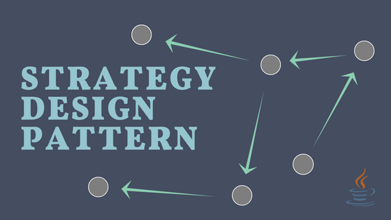
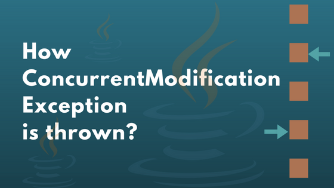

I am excited to announce that thetechstack.net is now techstackjava.com
Strategy design pattern
This article will explain the strategy design pattern using functional interfaces. Sometimes application may need to execute an algorithm conditionally. Here the algorithm means nothing but a strategy, execution of this strategy depends on runtime conditions or it depends on the input received from the user.
Introduction to java.time

This article will provide introduction to the java.time package. This package is introduced in Java 8 version and it contains many classes and interfaces to represent and process dates and times.
How ConcurrentModificationException is thrown?
How concurrent modification detection logic works and on what basis ConcurrentModificationException is thrown? This article will explain these questions. Iterating a collection is one of the important operation we usually perform and it can be a time consuming if collection is big enough.
Regex Tester With Spring Shell

Spring framework is the suite of many projects, using which we can develop wide variety of applications. These applications may need user interaction, the most common way is to have a web interface.
Infinite streams

Streams allows us to generate endless progression of discrete objects. There are couple of methods available in Java which will help us to generate infinite sequences.
Recipes for Optional
Optional allows us to wrap a nullable object in it so we can make a method to return Optional instead of bare object. There is a possibility that below method can return null; so we need to explicitly do the null check on the returned object before using it.